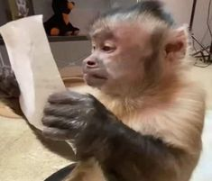
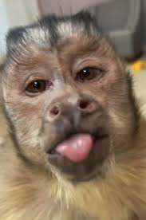

tomou a internet de assalto, conquistando todos com sua simplicidade e humor peculiar. No centro do meme, está um macaco cuja expressão vazia ou desconcertada se tornou a reação perfeita para uma ampla gama de situações desconfortáveis, confusas ou hilárias. Seja em momentos em que alguém não sabe o que dizer, ou quando algo completamente inesperado acontece, o "Monkey" capta a essência desse sentimento universal de 'o que está acontecendo?' com um toque de humor absurdo. Nesse cenário, ele se tornou o meme do momento, espalhando risadas por toda a web."
Rosto Simples, o macaco do meme geralmente apresenta um rosto simples e inexpressivo, que é parte do charme. A expressão é quase sempre de surpresa, confusão, ou desconforto, com olhos ligeiramente esbugalhados. Pele Marrom ou Bege: A pelagem do macaco é tipicamente marrom ou bege, dependendo da versão do meme. Esse tom neutro contribui para a aparência cômica e universal do personagem. Olhos Grandes: Os olhos são uma das características mais marcantes, muitas vezes grandes e redondos, dando uma aparência de surpresa ou perplexidade. Boca Pequena: A boca do macaco é pequena e discreta, geralmente sem esboçar um sorriso, o que contribui para a expressão neutra ou desconcertada. Postura Corporal: Em muitas versões do meme, o macaco é retratado de perfil ou levemente de lado, como se estivesse observando algo com uma certa hesitação.
O meme "Monkey" se destaca não apenas pela sua simplicidade visual, mas também pela profundidade de expressão que transmite através de uma face tão inexpressiva. Ele encapsula momentos de surpresa, confusão e até desconforto de uma maneira que ressoa universalmente. É essa combinação de humor sutil e universalidade que garantiu ao "Monkey" um lugar especial na cultura dos memes. À medida que ele continua a circular nas redes sociais, fica claro que esse macaco, com seu olhar perplexo, continuará a ser o reflexo perfeito das nossas reações mais inesperadas e, por isso, permanece o meme do momento.
